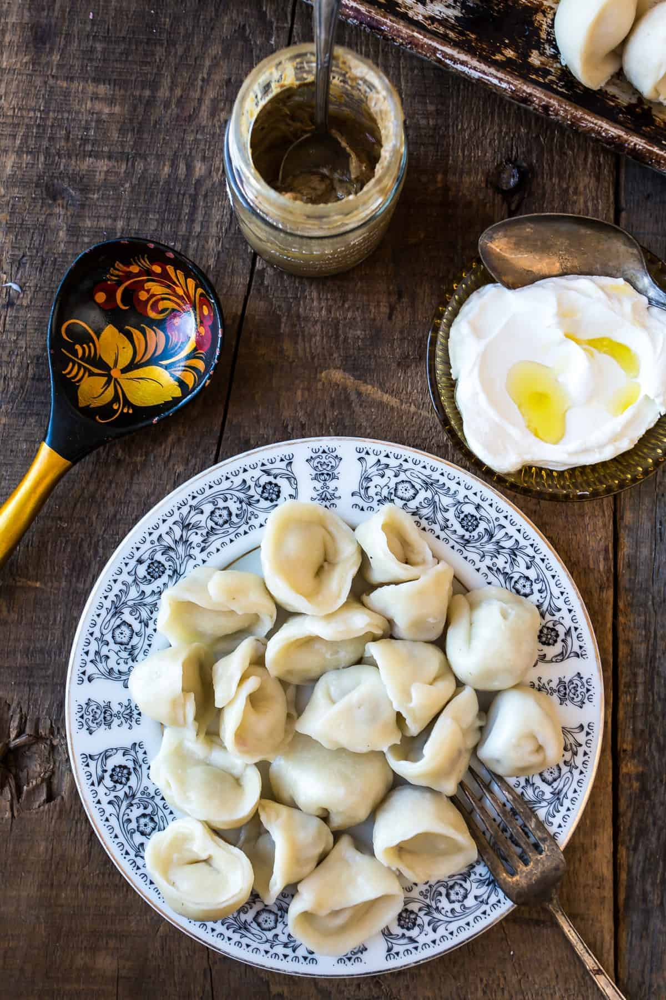

Varenyky

Home Page
Ukrainian dumplings made with soft dough and stuffed with a variety of fillings like mashed potatoes, cheese, or sauerkraut. They’re boiled and often topped with butter, fried onions, or sour cream for a comforting, homestyle meal.
Ingredients
- All-Purpouse Flour
- Eggs
- Water
- Salt
- Potatoes (for filling)
- Onions (for filling or topping)
- Butter
- Cheese or sauerkraut
Steps to Make Varenyky
- Make dough by mixing flour, eggs, water, and salt; knead and rest.
- Prepare filling (e.g., mashed potatoes with sautéed onions or cheese).
- Roll out dough and cut into circles.
- Place filling in the center, fold over, and pinch edges to seal.
- Boil varenyky in salted water until they float.
- Serve with melted butter, fried onions, or sour cream.